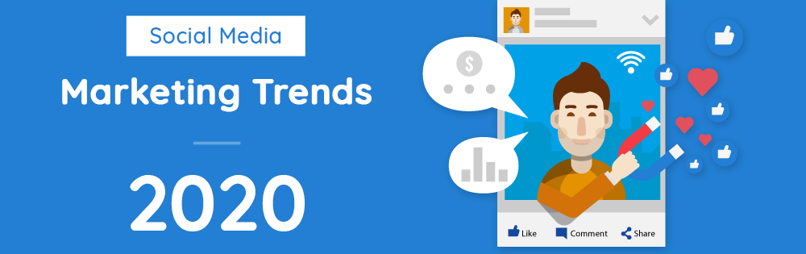
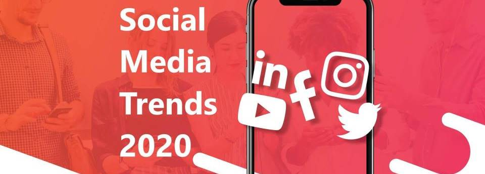
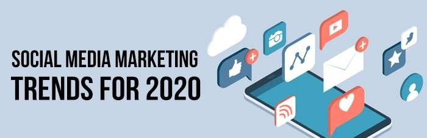

There is no doubt social media is the most powerful tool of digital marketing from last 2-3 years and again it’s the no. 1 trend of 2020 again. Here we’ll discuss about some important latest social media trends of year.
1. Micro-Content Takes Other Forms
On social networks, microcontent has taken many forms in recent years. For example - very short videos (often excerpts from a longer video), computer graphics, quote. In the past few months, I have seen another form of micro-content flourish on Instagram and LinkedIn, looking like a carousel.
Many influencers and experts use it to educate their audience through a series of cards (slides) that take you literally less than 30 seconds to read. And you know what? It works extremely well.
These contents reap a crazy commitment: comments and shares. The most sought-after engagement on social networks. In addition, they are more easily consumed on mobile than a computer. Today, there are more than 3.6 billion users of social networks on mobile (47% of the world's population). You understand the importance of having mobile-friendly content.
Of course, it's not content you're going to post if you're selling clothes. But, if your target audience does a lot of research before making a purchase decision, it's a sign that educational carousels are a type of content that you could incorporate into your social media content strategy.
No need to publish every day. Once a week, this is largely enough. You will also need a template to reuse many times for your carousels. For this, I advise you to use free (or paid) tools such as Canva, PowerPoint or Keynote.
2. The Social Commercial Will Continue Its Expansion
Facebook, Instagram or Pinterest as a means (or tool) to promote and sell products and services. Specifically, it is the publications that contain a tagged product. Instagram, Facebook, Pinterest, and Instagram. For example, Instagram Shopping allows you to tag one or more products on the same image, video or story.
Do Users Like This Type of Publications?
This study by eMarketer shows that social media users are increasingly likely to interact with posts containing a tagged product. And it's not close to stopping if you believe these numbers. The reason for the popularity and rise of social commerce is the frictionless shopping experience. It is becoming easier to make a purchase from the moment you have had a crush on a product present in a social publication.
At the moment, social networks act as an intermediary before the purchase, i.e. you identify a product that you like, you click on the tag, the product appears and you click for more information. You are redirected to the merchant site to add the product to your cart, initiate the payment and then purchase.
The experience is so simple and frictionless that I am convinced that users less comfortable with digital do not even realize that they are redirected to a merchant site after clicking the "view on Website" button. This shopping experience is likely to be (even) more enjoyable for your little fingers with the arrival of Instagram Checkout.
Just reading the name of the feature, you understood that Instagram will act as an intermediary at the level of payment. Concretely, you will no longer leave the platform to make a purchase and you can imagine that Instagram will take a commission on the sales generated. The functionality has been tested since March 2019 in the US with 22 international brands. No one knows when Checkout will be available for all companies, but one can imagine that it will be by 2020 or 2021.
To finish this part, also know that influencers can collaborate with brands (since 2019) and tag the products of a brand of which they are partners. And to say that this is just the beginning. Instagram, Facebook more than anything, is becoming a giant marketplace.
3. Pinterest and LinkedIn (Re)Win the Heart of Marketers
This year, I see LinkedIn and Pinterest (re)win the hearts of marketers.
LinkedIn is "only" 660 million registered members and about 300 million active users worldwide. Facebook or Instagram is nothing if you compare this figure to Facebook or Instagram. In 2019, many marketers (finally) realized LinkedIn's potential for their business. Now professionals (experts, consultants, managers, entrepreneurs) build their personal brand on LinkedIn with infographics, videos, micro-content, etc…
The best example I have in mind is that of Justine Hutteau. I do not know how many people have discovered this personality (and his company breathes) by seeing one of his videos pass on LinkedIn. Justine, like many other people, took advantage of LinkedIn in 2019 to make talk about him and his company (B2C or B2B, it does not matter!).
As Gary Vaynerchuk (very active on LinkedIn today) says, LinkedIn only became a content creation platform after it was bought by Microsoft in 2016. In 2019, LinkedIn confirmed all the expectations marketers had in him / her! By 2020, I expect to see more users and companies producing content on LinkedIn, which will mechanically lower the organic reach of publications.
One last thing compared to LinkedIn. I can't help but see it as a professional version of Facebook with virtually the same features: native Videos, Live videos (only a handful of influencers are entitled to it), reactions and Stories (only accessible to students at U.S. universities).
In short, in the last two years, LinkedIn has morphed and it cannot be said that some of the features that have arrived on the platform do not resemble those proposed by Facebook.
We're all waiting to see more 🙂. If you want creative advice to propel your personal brand on LinkedIn in 2020, read point 1 of this article from my blog. I've boosted my personal brand on LinkedIn myself by posting content. I went from 3000 subscribers to almost 10,000 in the space of a year!
PinterestAs for Pinterest, I imagine marketers will also be more interested in it in 2020 because Pinterest is a particular social network. Instagram Facebook Pinterest behaves much more like a search engine than other social platforms like Facebook, Instagram or LinkedIn. Facebook, Instagram, Twitter and LinkedIn's big problem is that investing in time you consent only produces short-term results. (That's also why I've slowed my social media publishing efforts to focus on my business.)
The lifetime of content on these platforms is very short. Facebook and Instagram for one or two days. Sometimes a week on LinkedIn. On Pinterest, pins can continue to drive traffic for years. It is this long-term return on investment that, in my opinion, will attract marketers and e-traders who are looking for a better way to invest their time/resources on social networks.
4. User Generated Content (UGC)
90% of consumers trust the recommendations of their peers compared to only 33% who trust traditional advertising. In other words, your audience prefers to listen to your customers than yourself.
What does that mean?This means that your customers can (also) help you talk about your products / services. It is a form of word of mouth online. This type of content is very common on Instagram. For example, Starbucks regularly republishes Instagram photos of its users. This is quite common, and increasingly via Instagram Stories.
But, that's not all…
In 2019, I saw several companies highlight their customers in their ads. A start-up in FoodTech, so Shape, has an Instagram account that contains only success stories from their customers. On this account, the start-up so shape republishes virtually only content generated by its customers.
There is no doubt, brands will continue to use the UGC in 2020 (and beyond)!
To learn more about the UGC, I invite you to read point 10 of this article where I explain how to republish this type of content on your Instagram account without violating the rules regarding data use.
5. Social Network Television
Instagram Facebook launched the IGTV app in 2018, a platform dedicated to video for Instagram users. The peculiarity of this app is that you can only publish videos in vertical format. The goal of course is to promote the creation of long format videos within a platform entirely dedicated to video.
Any Instagram user can create their own channel on IGTV (in addition, all your subscribers are automatically subscribed to your channel). Facebook has also launched worldwide "Watch", which is also a platform dedicated to video, hosted in Facebook this time. Watch already existed in the USA since August 2017. In a few words, Facebook Watch is:
- A place to discover new videos (through research or suggestions).
- Follow the videos of the Pages and personalities you follow
- A place to find your recorded videos
- Videos you can participate in (Watch Parties)
Some "creators" can also create a show on Watch (Be it a web-series, reality TV, reportage, etc.), with a Facebook Page entirely dedicated to the show. Facebook Watch looks like a competitor to YouTube. Even though Watch doesn't seem to be very popular with us yet (despite the 400 million monthly active users), Facebook seems very serious about this platform and has expressed it in several ways:
- "We want to give content creators the tools they need to develop a business on Facebook.”
- "We want to give the opportunity to any creator / media to be able to create their own show in the future.”
As for IGTV, the platform had not conquered the hearts of users (and creators) … until Instagram decided to make machine back in 2019 and allow the publication of video in slideshow format (as on YouTube). Instagram allows creators to promote a snippet of their IGTV video directly from a post, which made it possible to better connect IGTV to Instagram.
Instagram still communicates little about the number of IGTV users, the average time spent on the app, but if I believe what I read, more and more brands are posting videos on IGTV. What seems acquired is that these platforms should become a second television for us, especially for young people of Generation Z (born after 1995).
6. Podcasts
I want to share with you one last (big) trend of social media, it's about podcasts. This format is not at all new, it appeared in the 2000s. It has lost in popularity and has recovered rapidly in recent years, especially in the USA. In 2020, marketers and companies will follow the trend and launch a podcast.
I have statistics that prove it. In 2019, there were already 700,000 podcasts (compared to 550,000 in 2018) and more than 29 million episodes. If you compare podcasts to blogging, the difference is abysmal. There are over 500 million blogs worldwide!
What explains the growth of podcasts in recent years?Podcasts fit perfectly into an active lifestyle because they can be consumed passively or indirectly. In other words, you can actively listen to a podcast by doing something else (e.g. cooking, sports, in transport, etc…). This simple fact makes podcasts rise in popularity, already in recent years in the USA where it has become normal to listen to his podcast while going to work (transport times are often longer) and now in Europe.
A study conducted by Edinson Research in March 2019 showed that Americans spend an average of 17 hours a week listening to podcasts! This same study reveals that more than one in two Americans has already listened to a podcast and that 32% of them listened to a podcast last month. According to a way Opinion study for Audible, 39% of French people have already listened to a podcast (this figure dates from 2017, it has probably evolved since).
So, this is an opportunity not to be missed. In addition, podcasts are much less competitive than blogging or video. In theory, you should be able to make a much easier place with podcasts than video or blog posts, especially since you can quickly get traction on your podcast thanks to interviews and shares of the people interviewed.
If you want absolutely everything to know about launching a podcast, I have good news for you. Pauline Laigneau (host of the Le Gratin podcast) explains on her YouTube channel how to launch a podcast. You will find on his YouTube channel a series of videos that show you what material to use, how to succeed your interviews and solo episodes, etc…
These are some top trends on social media in 2020. You may also read about 15 digital marketing trends of 2020 in my previous article. If you like this article please share it and subscribe our newsletter for other inspiring articles.
- Written by:V. Pathak,
Digital Marketer - Posted on:29 May, 2020
- Tags:Social Media, Social Media Trends, Trending in Social Media, Trends 2020, Trending 2020,